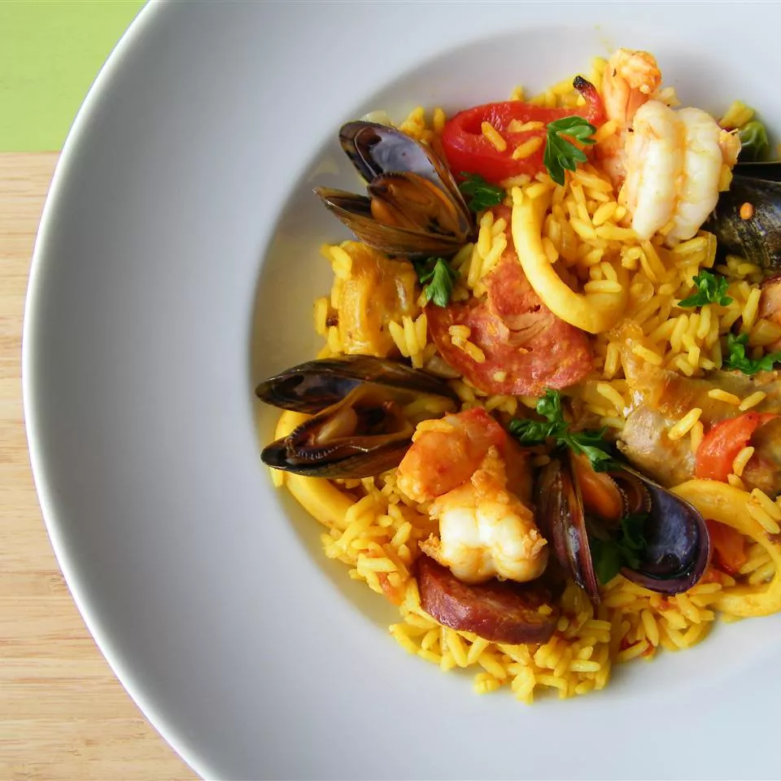

Odin-Recipes
Paella
Index

Paella is a renowned Spanish rice dish, primarily associated with the Valencia
region, characterized by saffron-infused rice cooked in a wide, shallow
pan called a paellera, along with various meats, seafood, and vegetables.
Ingredients
- 4 tablespoons olive oil
- 1 onion, chopped
- 4 tablespoons olive oil
- 1 onion, chopped
- 2 cloves garlic, minced
- 1 red bell pepper, chopped
- 4 ounces Spanish chorizo, casing discarded and cut into 1/4-inch dice
- 2 skinless, boneless chicken breast halves - cut into 1-inch cubes
- 1 (12 ounce) package uncooked Arborio rice
- 5 cups chicken broth
- ½ cup white wine
- 1 sprig fresh thyme
- 1 pinch saffron
- salt to taste
- ground black pepper to taste
- 2 squid, cleaned and cut into 1-inch pieces
- 2 tomatoes, seeded and chopped
- ½ cup frozen green peas
- 12 large shrimp, peeled and deveined
- 1 pound mussels, cleaned and debearded
- ¼ cup chopped Italian flat leaf parsley
- 8 slices lemon, for garnish
Steps
- Heat olive oil in a large skillet over medium heat. Add onion and garlic, and sauté until softened.
- Add red bell pepper and chorizo, cooking until the chorizo is browned.
- Stir in chicken pieces and cook until browned on all sides.
- Add Arborio rice, stirring to coat with the oil and mix with the other ingredients.
- Pour in chicken broth and white wine, then add thyme, saffron, salt, and pepper. Bring to a simmer.
- Reduce heat to low, cover, and cook for about 15 minutes.
- Add squid, tomatoes, peas, shrimp, and mussels. Cover and cook for an additional 10-15 minutes until seafood is cooked through.
- Remove from heat, sprinkle with parsley, and let rest for a few minutes before serving.
- Garnish with lemon slices and serve hot.